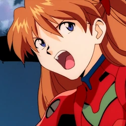

|  |
14 лет. Второе Дитя, пилот Евангелиона-02. Ученица класса 2-А школы 707 Токио-3 после 8-го эпизода сериала (в манге: после 20-й сцены, 4-го тома).
У неё смешанное немецко-японское происхождение, тем не менее по национальности она немка. Имеет гражданство США. Аска дерзка, эгоистична и эгоцентрична, часто груба (особенно по отношению к Синдзи) и имеет очень высокое (завышенное) мнение о себе и своём умении пилотировать Евангелион.
В дополнение она имеет ожесточённое стремление к независимости. Аска явно сходит с ума от влюблённости в Рёдзи Кадзи, но в то же время её привлекает и Синдзи, однако, она не может верно выразить ему свои чувства.
В манге её поведение ещё более вызывающе и Синдзи с Мисато приходят к выводу, что её культурное поведение — лишь маскировка отвратительного характера. С другой стороны, в отличие от сериала, Аска пытается помочь Хикари наладить отношения с Тодзи. А также она добивается того, что Кадзи признаёт, хоть и не принимает, её чувства.
В серии анимационных фильмов Rebuild of Evangelion Сикинами Аска Лэнгли одна из главных героинь, созданная на основе Аски Лэнгли Сорью. В отличие от сериала, теперь она имеет звание капитана. Её характер по сравнению с другими персонажами перетерпел наиболее значительные изменения.
Если в сериале Аска приставала к Кадзи вплоть до предложений переспать с ней, и для неё было вполне нормально предложить Синдзи поцеловаться с ней, то теперь она не интересуется Кадзи и её приставания к Синдзи не доходят далее неудачных попыток приготовить обед. Также, она считает себя единственным пилотом, получившим своё место за способности, и полагает, что Рей и Синдзи стали пилотами,
пользуясь своими связями в Нерве. После того, как она узнала о том, что Рей любит Синдзи, она предпочла избегать остальных пилотов и вместо того, чтобы идти на обед устроенный Рей, стала пилотом Евангелиона-03. В этой роли она была заражена Ангелом, и в третьем фильме показана с повязкой на левом глазу, а также пилотирующей Евангелион в открытом космосе.
Приметы: Длинные ярко-рыжие волосы, голубые глаза, почти всегда использует зажимы А10, чтобы закреплять свою причёску. |